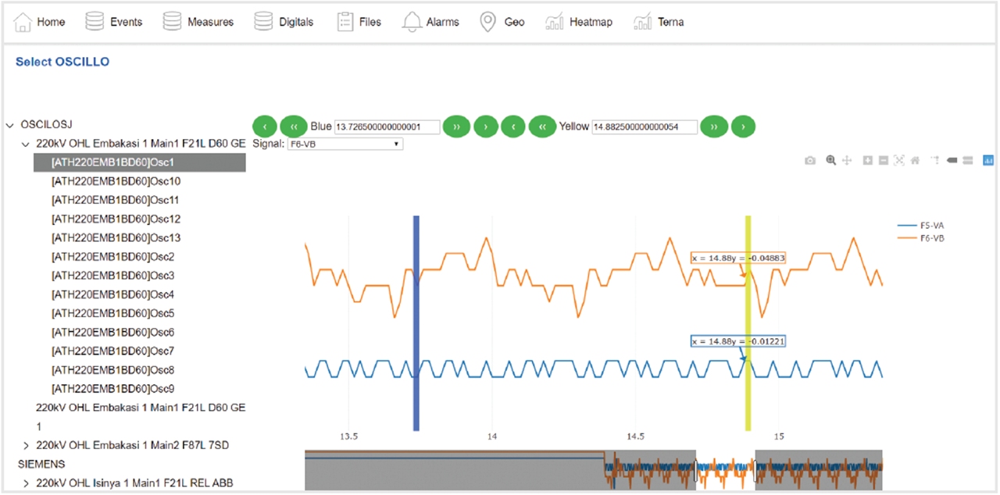
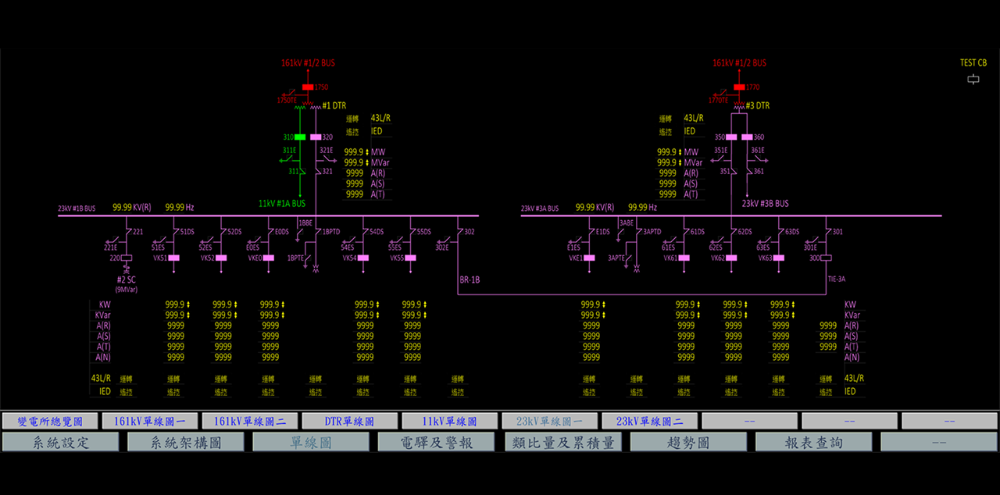

卓越的視覺化管理


直觀的監控介面
GPG Viewer 提供頂尖的圖形化用戶界面，全面支援向量圖形，提供高達 1600x1200 分辨率的超清晰視圖，並具備靈活的縮放與平移功能。
實時互鎖視覺化
系統能自動生成互鎖狀態的圖形表示並實時動態刷新，操作員能一目了然地精確掌握全變電站狀況，顯著提升整體操作安全性。
動態趨勢與跨平台
將實時測量與歷史波形完美結合分析，並支援報表導出。內建 Web 伺服器與雲端連線，可隨時透過任何裝置的瀏覽器實時監控


GPG Viewer 提供頂尖的圖形化用戶界面，全面支援向量圖形，提供高達 1600x1200 分辨率的超清晰視圖，並具備靈活的縮放與平移功能。
系統能自動生成互鎖狀態的圖形表示並實時動態刷新，操作員能一目了然地精確掌握全變電站狀況，顯著提升整體操作安全性。
將實時測量與歷史波形完美結合分析，並支援報表導出。內建 Web 伺服器與雲端連線，可隨時透過任何裝置的瀏覽器實時監控